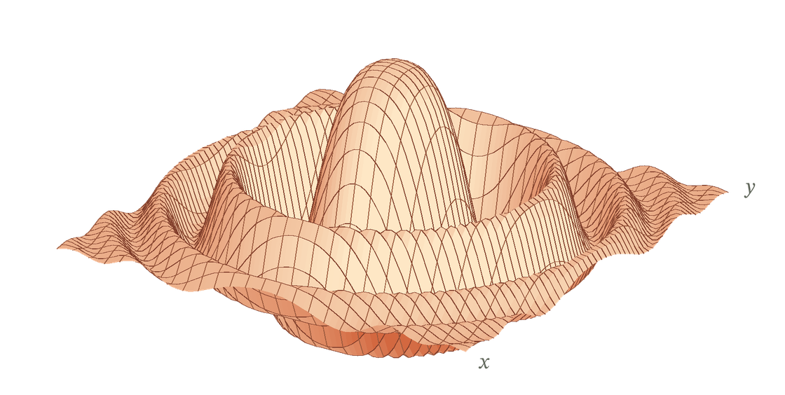
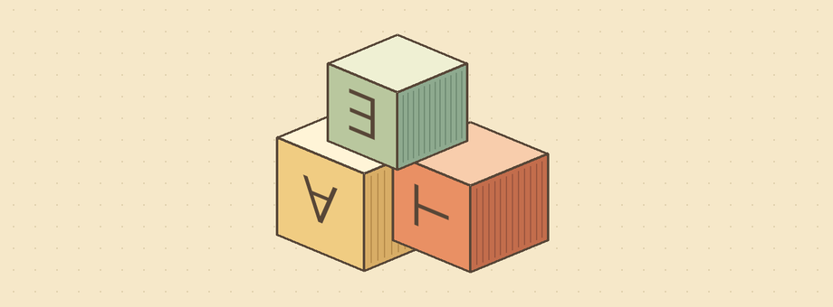

Research paper
Research paper
Waves on a hypersurface
What happens when a wave feels a nonlinear interaction only along a line or a sphere?
A personal math notebook
I’m Xilin Chen. I study partial differential equations and integrable systems at Georgetown University. I’m also interested in how LLM interpretability, and Lean Formalization.

Research paper
What happens when a wave feels a nonlinear interaction only along a line or a sphere?
 Lean & AI
Lean & AI
A set of workflow skills for tracing a paper argument all the way to a checked Lean declaration.

Proof playgroundA few small Lean puzzles. Pick a tactic and watch what happens to the goal.